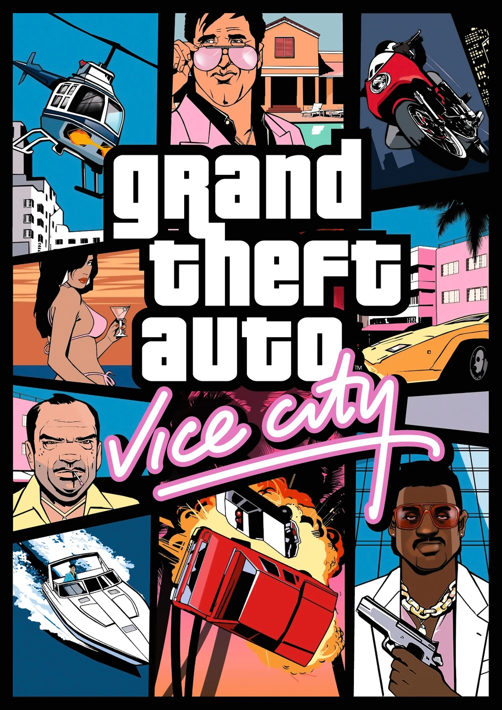

Grand Theft Auto: Vice City es un videojuego de acción y sandbox de mundo abierto desarrollado por Rockstar North y distribuido por Rockstar Games, lanzado el 29 de octubre de 2002.
El juego transcurre en Vice City, una ciudad ficticia parodia de Miami, en el año 1986.
El jugador tomará el control de Tommy Vercetti, un hombre que salió de prisión tras cumplir una sentencia de 15 años, quien deberá supervisar un trato de drogas a pedido de la familia Forelli. Tras salir mal y perder el dinero de Sonny Forelli, Tommy comienza en la búsqueda del responsable, trabajando para varias figuras importantes del submundo criminal de Vice City.
|  | |
|---|---|
| DESARROLLADOR | Rockstar North |
| DISTRIBUIDOR | Rockstar Games |
| PRODUCTOR | Leslie Benzies |
| GUIONISTAS |
|
| PLATAFORMAS |
|
| FECHA DE LANZAMIENTO |
PlayStation 2 29 de octubre de 2002 (NA) 8 de noviembre de 2002 (EU) Microsoft Windows 13 de mayo de 2003 (NA) 16 de mayo de 2003 (EU) Xbox 4 de noviembre de 2003 (NA) 2 de enero de 2004 (EU) macOS 12 de noviembre de 2010 iOS 6 de diciembre de 2012 (10th) Android 12 de diciembre de 2012 (10th) Amazon Fire OS 15 de mayo de 2014 (10th) PlayStation 4, PlayStation 5 Xbox One, Xbox Series X/S Microsoft Windows Nintendo Switch 11 de noviembre de 2021 (DE) Android iOS 14 de diciembre de 2023 (DE) |
| MOTOR GRÁFICO |
|
| VENTAS | 17.5 millones de copias (marzo de 2008) |